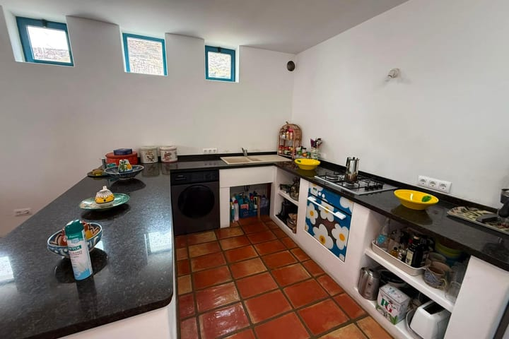

Limpieza completa entre huéspedes
El apartamento se deja como si nadie hubiera estado antes. Se limpia a fondo cocina, baños, dormitorios y zonas comunes, incluidos los rincones que se acumulan en temporada alta: juntas de la ducha, interior del microondas, filtros de la campana o el polvo de las lamas de las persianas.
- Cocina completa: encimeras, fregadero, electrodomésticos por dentro y por fuera
- Baños desinfectados, mamparas sin cal y espejos sin marcas
- Aspirado y fregado de todos los suelos
- Polvo en muebles, estanterías, lámparas y rodapiés
- Ventilación y retirada de basura